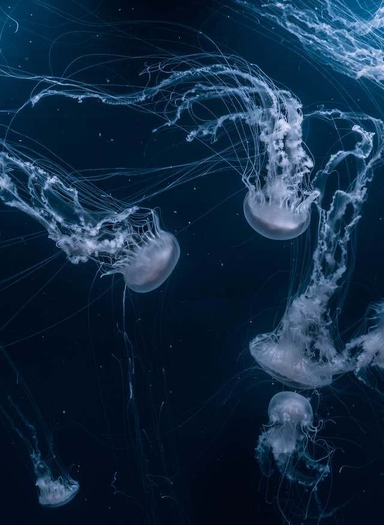

The jellyfish is a generic term for invertebrates belonging to the jellyfish family. Jellyfish range from smaller than beans to more than 2m in diameter, and four necks and about 200 species belong to this. It appears all over the world. 
94% to 98% of the adult body is made of water. In addition, jelly-like substances are filled between the two cell layers that make up jellyfish, which act as a kind of skeleton that supports fragile body walls, and allows jellyfish to maintain buoyancy in the water.